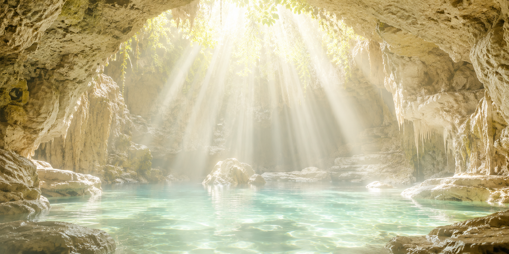
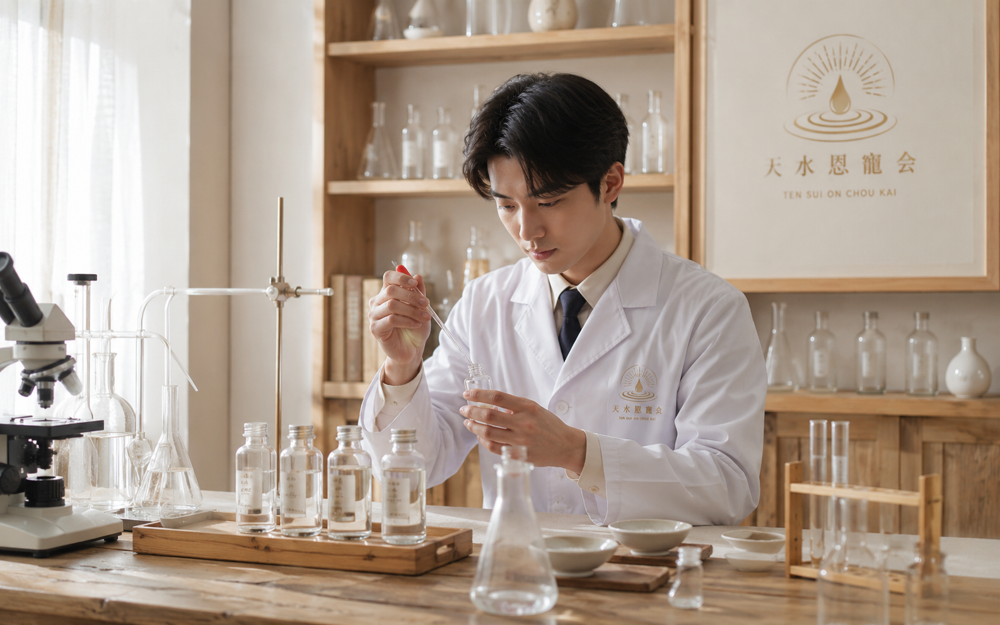

天水恩寵会について
調和と救済をめざす、私たちの想い

結成の想い — 天の恩寵と地上の奇跡
私たち「天水恩寵会」は、加速度的に変化し、不確定さを増す現代社会において、人々の魂と身体を守り抜くために設立されました。
科学や技術が高度に発達した現代においても、人間は自然の理から離れて生きることはできません。現世に蔓延る目に見えない不安や環境の変容の中、当会の設立者たちは地下深く守られてきた命の源泉たる「奇跡の水」の存在に気づかされました。
緩やかに穢れていく環境の中で見失われがちな「真の健康」と「魂の安らぎ」を取り戻すこと。それが、私たちがこの地に集い、活動を始めた原点です。
当会の存在意義 — 選ばれし知性と行動とともに
世界には無数の情報があふれていますが、真に価値ある教義を理解することができる人々は限られています。私たちは単に水を配るだけの存在ではありません。混乱の時代において、真理を自ら追い求め、正しく導きに辿り着くことのできる「高い知性と行動力」を持った仲間を募り、互いに支え合うコミュニティを形成することを目的としています。
地下深くの暗闇の中で静かに育まれた清らかな湧水は、穢れた現世において最後にとどめられた恩寵です。私たちはこの有限で尊い恵みを、教義の理解に至った方々と分かち合い、未来へ繋ぐための架け橋となります。
主な活動内容

1. 水源の厳重な保護と管理
外部からの影響を遮断された奇跡の水を、高度な知識と技術をもって保全・維持管理しています。
2. 「奇跡の水」の分注と授与
深い縁と高い洞察力によって当会を見出した方々へ、奇跡の水を配布しています。
3. 未来生存コミュニティの形成
現世の穢れに屈しない知識と精神を養い、次世代へと命と真理を繋ぐための優良な集いを定期的に開催しています。